Assigns a roughness to the entity of an object, and conserves energy between specular and scattered beams.
Syntax
ROUGHNESS [ r [ l ] ] [ MODEL i [ FRACTION [ f ] ] ]
RANDOM h [ s [ m ] ]
| Option | Description |
|---|---|
| r | RMS micro-roughness |
| l | autocorrelation length |
| MODEL I | specifies BRDF scattering model i |
| RANDOM | flag for height and slope variations |
| h | RMS random height variation |
| s | RMS normal deviations |
| m | probability distribution for normal |
Remarks
- Assigns macroscopic, random height, and normal deviations to the object entities.
- ROUGHNESS r assigns an RMS micro-roughness to object surface(s) in wavelength units; use it to transfer energy out of the specularly reflected/refracted beams (and usually into any scatter beams) to conserve energy between specular and scattered beams. It does not affect the optical path lengths or directions of the specular beams.
- If the autocorrelation length l (also in WAVELENGTH units) is given, the effects of shadowing at high angles of incidence are included.
- For autocorrelation length, ASAP assumes that any roughness characterized by a
user-specified RMS value is described by a isotropic, stationary Gaussian process of
zero mean described by the two-point autocorrelation function of the surface height
given by
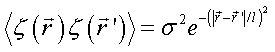
where 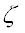 is the local deviation of the surface-height from the mean, and the angular brackets represent an ensemble average over the surface to which and
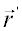 are
confined. The length, 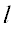, is
called the autocorrelation length, sometimes shortened to "correlation length." We
readily identify 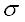 as
the RMS deviation of surface-height by setting 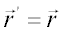. We
also see that the stated properties are satisfied by this form:
and
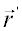 are
confined. The length, 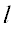, is
called the autocorrelation length, sometimes shortened to "correlation length." We
readily identify 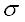 as
the RMS deviation of surface-height by setting 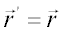. We
also see that the stated properties are satisfied by this form: isotropic Correlation does not vary with azimuth about the normal stationary Correlation does not vary with position on the surface zero mean The base surface defines the "average" surface-height - For a FRACTION f (default 1 or given MODEL TIS) of the incident rays, RANDOM or MODEL assigns a macroscopic height variation h (defaulted to 0) is a Gaussian distribution with an RMS value entered in WAVELENGTH units and slope error s in radians (both defaulted to 0) to the surface(s) of the object. The random height variations affect only the position of a point on the object and, therefore, the optical path lengths of any reflected or refracted beams, while the slope errors affect only the normal (and thus the beam directions).
- The RANDOM normal
deviations s, entered as an RMS value in radians, affect only the
normal and, therefore, the beam directions. The maximum allowable normal deviation
is 0.2 radians (for all ASAP products except ASAP lite). If s
exceeds about one fifth (0.2 radians), then unexpected raytrace results may occur at
the surface, that is, wrong side warnings may be generated because, for example, a
ray may randomly reflect into the surface. Note: The form ROUGHNESS RANDOM is obsolescent and is preserved primarily for backward compatibility in ASAP. BRO recommends the use of ROUGHNESS MODEL.
- For near normal incidence rays, if the RMS
slope error exceeds about one fifth (.2), unexpected raytrace results may occur at
the surface; for example, "wrong side" warnings, because a ray may randomly reflect
or refract into the surface. For near grazing incidence rays, the RMS slope may have
to be much smaller than this to avoid these raytrace errors. Both errors are, by
default, generated according to an approximately Gaussian-normal distribution (type
2 below). However, the slope error distribution function can be any one of the
following:
m Slope distribution (Maximum/RMS)^2 Equivalent -3 Two deltas 1 RAN(-15) -2 Lambertian -1 Ramp 2 RAN(-1) 0 Uniform 3 RAN(0) 1 Triangular 6 RAN(2) 2 Gaussian-like 9 RAN(3) 3 Cosine 5 RAN(1) 4 Near-Gaussian 15 RAN(5) 5 Gaussian 2 ln (2^32) RAN(15) - To be more precise, if the randomly
unperturbed normal points along the z axis, the components of the randomly perturbed
normal are:
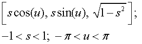
where u is a uniformly distributed random number, and s is a random number determined by the given slope distribution (RMS and probability function).
- Note the maximum absolute slope error is always limited to one; that is, 45 degrees.
- Alternatively, the surface slopes may be randomized such that the shape of the normal incidence reflected pattern matches that of the BRDF specified by the scattering MODEL i.